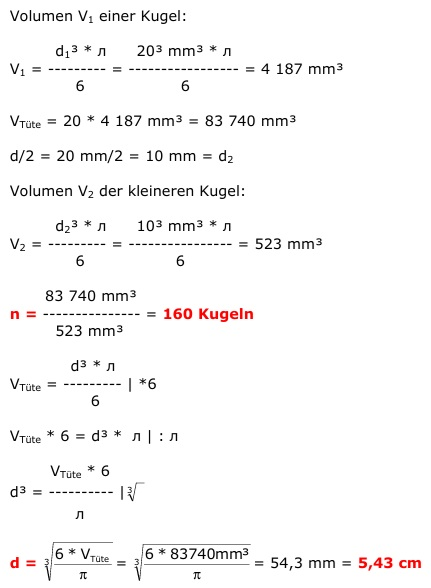

Aufgabe 397 In einer 100 g Tüte sind 20 Schokokugeln mit einem Durchmesser von 20 mm. Wie viel Kugeln müssten in einer Tüte sein, wenn ihr Durchmesser halb so groß wäre? Welchen Durchmesser d hätte eine Kugel aus der gleichen Menge Schokolade wie der Inhalt einer Tüte? 